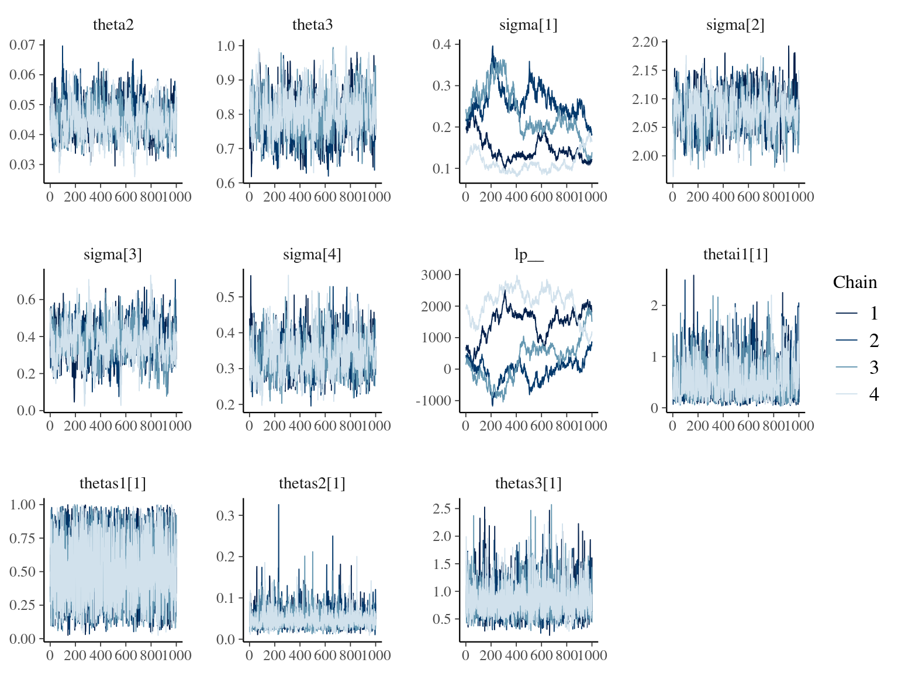
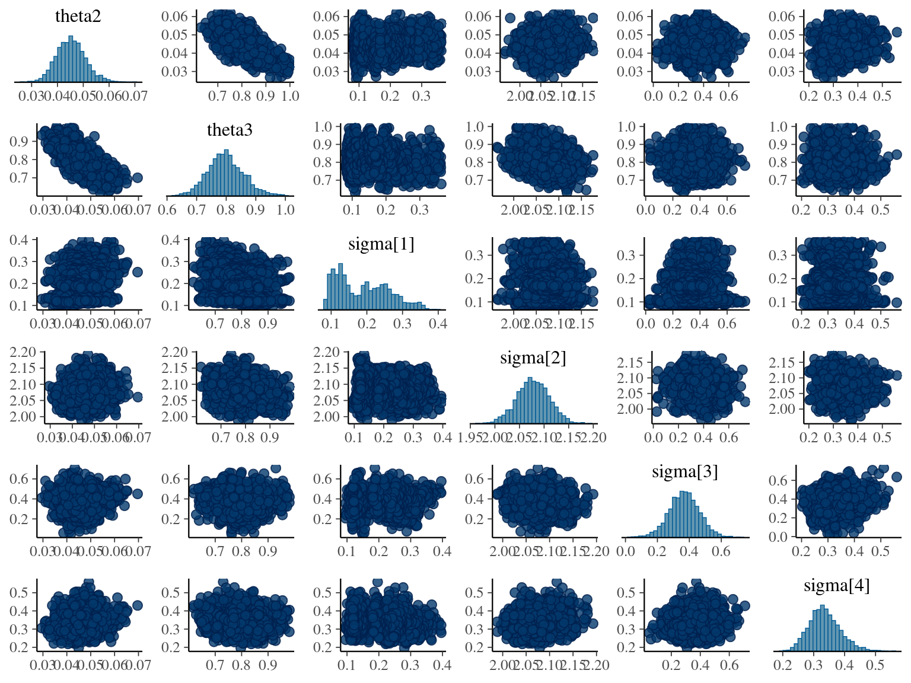

Chapter 2 Growth
We investigated effects of phylogeny and ecological processes on individual growth, using phylogeny, topography and neighbourhood indices. The individual growth of individual \(i\) in species \(s\) between individual recruitment \(y_0\) and 2020, corresponds to the difference of DBH between the two years, and is defined with a hierarchical model in a lognormal distribution as follows:
\[DBH_{y=2017,s,i} - DBH_{y=y0,s,i} \sim logN(log[\sum_{y=y0}^{y=2017}AGR(DBH_{y,s,i})], \sigma^2_1)\]
where the difference of DBH \(DBH_{y=2017,p,i}-DBH_{y=y_0,p,i}\) is defined with a lognormal distribution located on the logarithm of the sum of annual growth rates \(AGR\) during the period \(y_0-2017\) and of shape \(\sigma_1\). The annual growth rate \(AGR\) for individual \(i\) in species \(s\) at year \(y\) with a diameter of \(DBH_{y,p,i}\) is defined following a Gompertz model (Gompertz 1825) already identified as the best model for growth-trajectories in Paracou (Hérault et al. 2011):
\[AGR(DBH_{y,s,i}) = Gmax_i.exp(-\frac12[\frac{log(\frac{DBH_{y,p,i}}{Dopt_s})}{Ks_s}]^2)\]
where \(Gmax_i\) is the maximum growth potential (maximal AGR during individual life) for individual \(i\),
\(Dopt_s\) is the species optimal diameter at which the individual reaches its maximum growth potential,
and \(Ks_s\) is the species kurtosis defining the width of the bell-shaped growth-trajectory (see figure 1 in Hérault et al. 2011).
To ease model inference, species optimal diameter \(Dopt_p\) and kurtosis \(Ks_p\) were defined as random population effects centered on a global \(Dopt\) and \(Ks\) with corresponding variances \(\sigma^2_{P,Dopt}\) and \(\sigma^2_{P,Ks}\). .
We used Bayesian inference with No-U-Turn Sampler (NUTS, Hoffman & Gelman 2014) using stan language (Carpenter et al. 2017).
We thus used the following growth model with a lognormal distribution to estimate individual growth potential:
\[\begin{equation} DBH_{y=today,s,i} - DBH_{y=y0,s,i} \sim \\ \mathcal{logN} (log(\sum _{y=y_0} ^{y=today} \theta_{1,s,i}.exp(-\frac12.[\frac{log(\frac{DBH_{y,s,i}}{100.\theta_{2,s}})}{\theta_{3,s}}]^2)), \sigma_1) \\ \theta_{1,s,i} \sim \mathcal {logN}(log(\theta_{1,s}), \sigma_2) \\ \theta_{2,s} \sim \mathcal {logN}(log(\theta_2),\sigma_3) \\ \theta_{3,s} \sim \mathcal {logN}(log(\theta_3),\sigma_4) \tag{2.1} \end{equation}\]
In stan, we fitted the equivalent model with the following priors:
\[\begin{equation} DBH_{y=today,s,i} - DBH_{y=y0,s,i} \sim \\ \mathcal{logN} (log(\sum _{y=y_0} ^{y=today} \hat{\theta_{1,s,i}}.exp(-\frac12.[\frac{log(\frac{DBH_{y,s,i}}{100.\hat{\theta_{2,s}}})}{\hat{\theta_{3,s}}}]^2)), \sigma_1) \\ \hat{\theta_{1,s,i}} = e^{log(\theta_{1,s}) + \sigma_2.\epsilon_{1,i}} \\ \hat{\theta_{2,s}} = e^{log(\theta_2) + \sigma_3.\epsilon_{2,s}} \\ \hat{\theta_{3,s}} = e^{log(\theta_3) + \sigma_4.\epsilon_{3,s}} \\ \epsilon_{1,i} \sim \mathcal{N}(0,1) \\ \epsilon_{2,p} \sim \mathcal{N}(0,1) \\ \epsilon_{3,p} \sim \mathcal{N}(0,1) \\ ~ \\ (\theta_{1,p}, \theta_2, \theta_3) \sim \mathcal{logN}^3(log(1),1) \\ (\sigma_1, \sigma_2, \sigma_3, \sigma_4) \sim \mathcal{N}^4_T(0,1) \\ \tag{2.2} \end{equation}\]
| chain | warmup | sample | total |
|---|---|---|---|
| chain:1 | 15H 55M 28.5S | 15H 59M 53.1999999999971S | 1d 7H 55M 21.6999999999971S |
| chain:2 | 18H 16M 53.6000000000058S | 17H 40M 26.8000000000029S | 1d 11H 57M 20.4000000000087S |
| chain:3 | 14H 23M 14.8000000000029S | 9H 30M 34S | 23H 53M 48.8000000000029S |
| chain:4 | 16H 40M 28.8000000000029S | 1d 8H 24M 55S | 2d 1H 5M 23.7999999999884S |


References
Carpenter, B., Gelman, A., Hoffman, M.D., Lee, D., Goodrich, B., Betancourt, M., Brubaker, M., Guo, J., Li, P. & Riddell, A. (2017). Stan : A Probabilistic Programming Language. Journal of Statistical Software, 76. Retrieved from http://www.jstatsoft.org/v76/i01/
Gompertz, B. (1825). On the nature of the function expressive of the law of humanmortality, and on a newmode of determining the value of life contingencies. Philosophical Transactions of the Royal Society of London, 115, 513–583. Retrieved from https://www.tandfonline.com/doi/full/10.1080/14786445908642737
Hérault, B., Bachelot, B., Poorter, L., Rossi, V., Bongers, F., Chave, J., Paine, C.E.T., Wagner, F. & Baraloto, C. (2011). Functional traits shape ontogenetic growth trajectories of rain forest tree species. Journal of Ecology, 99, 1431–1440.
Hoffman, M.D. & Gelman, A. (2014). The no-U-turn sampler: Adaptively setting path lengths in Hamiltonian Monte Carlo. Journal of Machine Learning Research, 15, 1593–1623. Retrieved from http://arxiv.org/abs/1111.4246